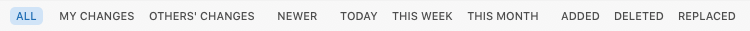

The log view’s filter bar allows you to quickly apply commonly-used filters to the displayed log items. You can also filter the contents of the view by text.

The filters are as follows:
Removes the other filters to show all items.
Clicking the All button does not reset the text in the filter’s search field. Use the View > Show All (key equivalent ⌘\) function to do this.
Shows only log items committed by the current user.
The current user is determined from the username for the current repository URL. For file:// URLs, the operating system username is used.
This filter is only available if a username is present in the repository URL.
Shows only the log items committed by users other than the current user.
This filter is only available if a username is present in the repository URL.
Shows only the log items newer than the working revision of the selected file or folder.
This filter is only available if a working copy item is selected.
Shows only the log items committed during the current calendar day.
Shows only the log items committed during the current calendar week.
Shows only the log items committed during the current calendar month.
Shows only the log items which contain added (or copied) files in the revision’s change set.
Shows only the log items which contain deleted files in the revision’s change set.
Shows only the log items which contain replaced files in the revision’s change set. A file is replaced when it is deleted and then added again in a single revision.